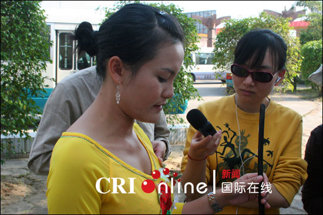
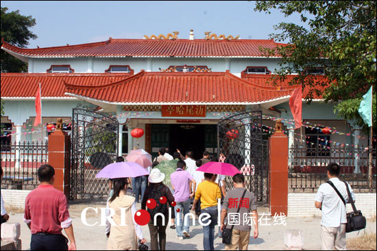
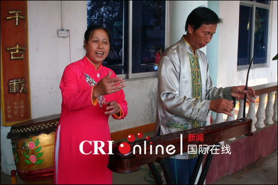
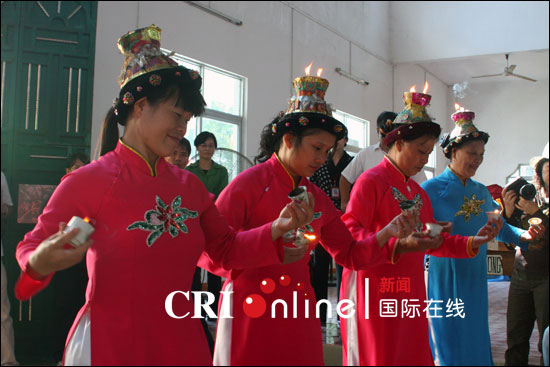
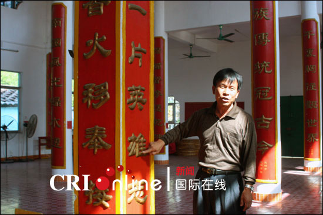
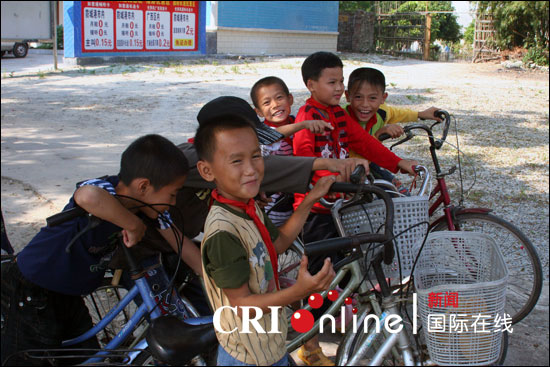
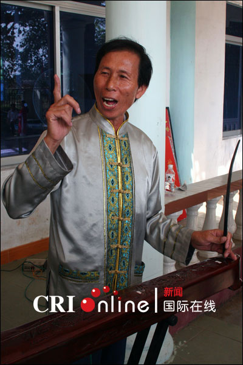

澫尾哈亭 图为中国国际广播电台记者采访京族独弦琴表演者赵霞。
图为中国国际广播电台记者收录京族唱哈音响。
哈节是为了纪念海神公的诞生，是京族人民特有的传统节日，其隆重程度仅次于春节。京族人以海洋渔业生产为主，信奉海神。每年都要到海边把海神迎回哈亭敬奉，全村男女老少穿着节日盛装，聚集在哈亭内外，举行迎神、祭祖和“唱哈”等活动，祈求人畜兴旺，五谷丰登。京族三岛都建有哈亭，祀奉神像和各姓氏的祖先牌位。过节日期三岛不尽相同，澫尾哈节为每年农历六月初九，巫头哈节为八月初一，山心哈节为八月初一。
各村的哈亭还是节日活动的中心。哈亭选用上等木料，有独特的民族形式，其建筑形式古朴、美观、繁简各异。屋顶的屋脊正中塑有双龙戏珠的吉庆形象装饰，哈亭内分左、右偏殿和正殿。正殿设有京族人信奉的诸神神座，殿内的柱子上都雕写着具有民族习俗特色的楹联或诗词。较大型的哈亭内，祭祀场地两侧设有阶梯形的宾客坐席，这是专供村里辈份最高、为修建此哈亭和筹办哈节捐资捐物者所设立。

图为京族表演艺人表演唱哈节仪式。

图为澫尾村村支书苏明芳介绍情况。

图为澫尾村的小孩。


图为澫尾村京族独弦琴传承人苏春发。
